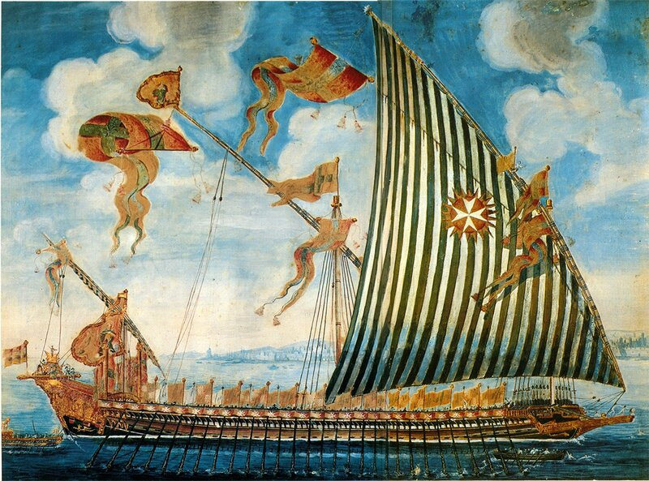
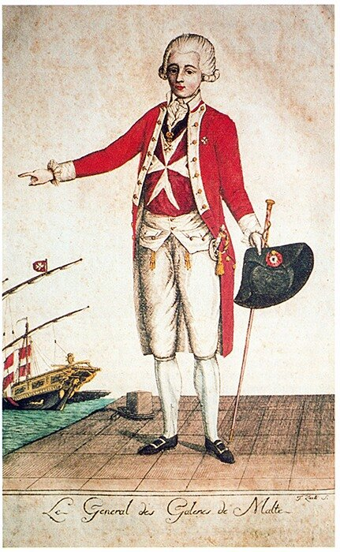

Пытаясь осветить роль галер Мальтийского ордена в военно-морском противостоянии XIV-XVI веков на Средиземном море, мы естественным образом погрузились в атмосферу того времени и, честно говоря, завязли в многочисленных исторических событиях, непосредственно связанных с этой темой. Я не сожалею об этом, так как для себя самого нашел в этом очень много интересного и познавательного. Но все же надо знать меру. Поэтому отступим пока (на время) от естественного течения событий и займемся более абстрактны вопросом – организацией военно-морских сил Мальтийского ордена.

По ходу рассказа мы уже рассматривали эту тему, подробно обосновав, в частности, неизбежность перехода ордена госпитальеров к новой доктрине «щита и меча», доктрине захвата и удержания господства на море. Кратко рассмотрели мы и раннюю историю военного флота иоаннитов.
Французский адмирал и историк Жюрьен де ла Гравьер к самым высоким заслугам ордена относит не длительную оборону форпоста христианства на Святой Земле, не две осады Родоса, не экспедицию в Алжир в 1541 году, а неутомимый энтузиазм, с которым мальтийские рыцари зачищали Средиземное море от «варварийских пиратов» (правда, рыцари и сами по случаю промышляли пиратством). В течение почти сотни лет флот Мальтийского ордена был самым верным средством держать в узде – el amparo de los desgraciados – мусульманских пиратов. Счет освобожденных мальтийцами из мусульманского плена христиан можно вести на тысячи.
Нетрудно заметить, что с начала четырнадцатого века во главе военных кампаний иоаннитов стоят уже не маршалы и туркопольеры, а адмиралы, и, немного позже, когда с появлением в военном флоте парусных кораблей галеры были выделены в особую группу, генералы галер (официально титул генерала галер в ордене – после организационного разделения парусных кораблей и галер – впервые был присвоен приору Капуи Леону Строцци (Léon Strozzi) в 1553 году).
Генерал галер Мальты (акварель Zimelli)
Формой генерала галер предусматривалось ношение на груди большого мальтийского креста на черной ленте, малого мальтийского креста на левой стороне мундира и кокарды на треуголке.
В латинских текстах официальная должность генерала галер назвалась praefectus generalis triremium (генеральный префект галер), однако в разговорном языке и неофициальной переписке он превратился в Генерала галер.
Постепенно должность адмирала (в латинских текстах – admiratus) Мальтийского ордена утратила свое значение. Адмирал и его заместитель (locum tenes venerandi admirati) делегировали свои оперативные и административные функции Генералу галер и капитанам галер. Адмиралу и его заместителю, которые большую часть времени проводили на суше, были вменены в обязанность функции по надзору за арсеналом и комендантские функции. Начиная с великого магистра Клода де ля Сангля (1553—1557) высшая морская должность ордена перестала быть привилегией только главы итальянского ланга, он мог назначаться из достойных кандидатур любой национальности.
Одновременно великий магистр снял с себя ответственность в деле назначения на должность генерала галер, поручив его избрание Совету ордена. Тогда и был на эту должность впервые избран француз – Жан Паризо де ла Валетт (de la Valette Parisot) из ланга Прованса. Да, именно тот де ла Валетт, который, став в 1557 году великим магистром ордена, прославился организацией обороны Мальты во время осады 1565 года. О Леоне Строцци и де ла Валетте мы поговорим отдельно, а сейчас перейдем к организационным основам, в рамках которых осуществлялась деятельность флота мальтийских рыцарей. Корабли всех флотов, которые действовали на Средиземном море, были приблизительно одинаковы по своей конструкции, поэтому именно организационная структура и система подготовки кадров определяли успехи мальтийцев на море.
Административная организация военно-морского флота Мальтийского ордена, предусматривающая планирование, снабжение, управление, набор и подготовку личного состава, распределение должностных обязанностей и меры по поддержанию дисциплины, по праву считалась лучшей в то время среди всех флотов Средиземноморья. Причем это был не свод закостеневших правил, а живая структура, которая получала постоянную подпитку новыми идеями в управленческой и технической сферах путем рекрутирования на морскую службу самых передовых представителей общества из всех европейских стран.
Для управления флотом в ордене существовали два специальных постоянно действующих органа, которые назывались «конгрегации» (congregazioni). Каждая из конгрегаций являлась фактически главным штабом соответствующих формирований флота Мальтийского ордена. Одна конгрегация занималась управлением эскадрой галер, вторая – эскадрой парусных кораблей. В состав конгрегаций входили по четыре представителя корпуса высших офицеров ордена, обычно из различных лангов, имеющих положительный опыт командования военными кораблями.
Система комплектования офицерского состава флота Мальтийского ордена получила широкую известность под названием караван (caravan). Со временем процедуры, предусматриваемые этой системой, стали обязательной составной частью посвящения желающих кандидатов в полноправные рыцари Мальтийского ордена. Чтобы стать членом ордена было необходимо принять участие в четырех шестимесячных кампаниях на галерах. Первоначальный отбор молодых аристократов, желающих вступить в орден, осуществлялся в лангах местными приорами. После этого молодой кандидат в рыцари оплачивал свой проезд (‘passage’) на одном из кораблей ордена на Мальту. После прохождения «курса молодого бойца» кандидат давал клятву и обет целомудрия, послушания и нищенства и получал орденское одеяние черного цвета с белым восьмиугольным крестом. Только после этого новобранец мог начинать свой первый караван, приступая к изучению искусства кораблевождения, тактики морского боя в роли простого солдата, артиллерийского искусства и, если ему уже исполнилось 25 лет, обязанностей капитана галеры. Конечной целью всех членов ордена, проходящих подготовку в караванах, являлось получение универсального патента, дающего право на занятие командных должностей (commandery) в любой европейской стране.